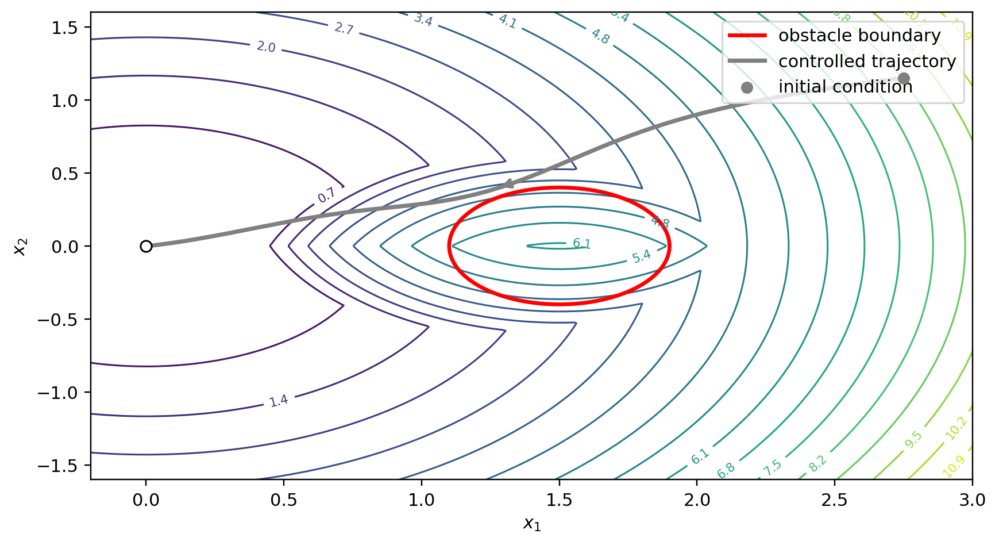
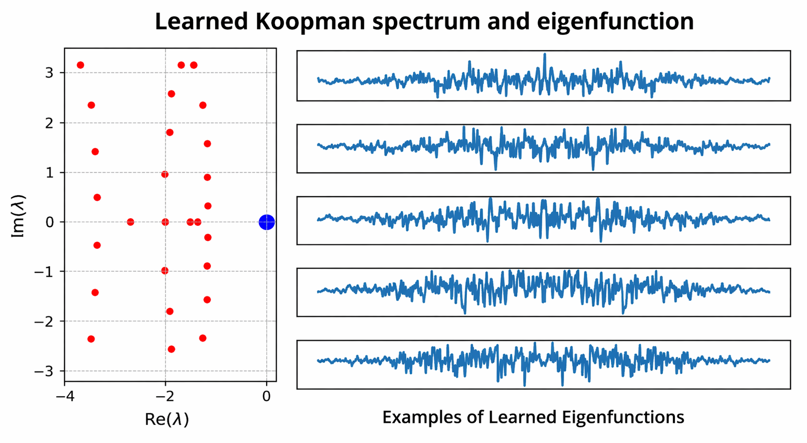
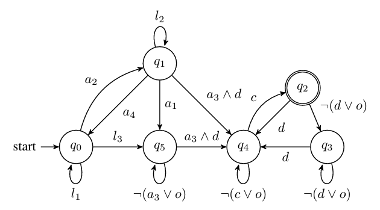
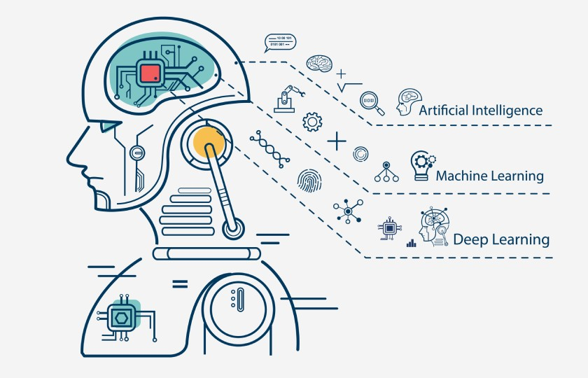
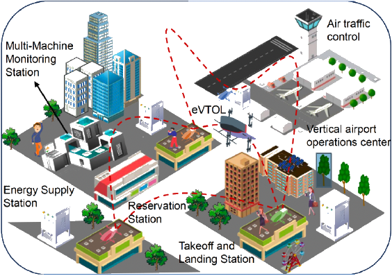

Research
In the current wave of artificial intelligence, there remains a fundamental gap between powerful empirical performance and principled understanding. This gap is particularly visible when viewed through the historical lens of control theory, whose early development was deeply intertwined with cybernetics, where feedback was recognized as a fundamental principle of intelligent behavior and became central to the mathematical foundations of intelligent systems.
Today’s data-driven approaches have significantly expanded the scope of system identification (akin to learning world models) and decision-making (e.g., end-to-end policy learning via regression) under uncertainty. However, they often sacrifice interpretability, robustness, and guarantees—properties that are essential in safety-critical environments. This tension is not new. Historically, engineering disciplines have often evolved along two complementary directions: one emphasizing principled, structured design, and the other favoring empirical performance and scalability.
My research is motivated by the need to bridge this divide: to develop interpretable and provable AI for control theory, while still embracing the strengths of experimental paradigms such as reinforcement learning and embodied intelligence. Rather than focusing on purely end-to-end solutions, I aim to address control problems in physical, uncertain dynamical systems where structure, safety, and reliability are indispensable, providing a principled foundation for AI-driven decision-making.
Theoretical Interests

Physics-Informed Construction for Qualitative Autonomy
We investigate systematic AI-enhanced construction of realtime feedback controllers with formal guarantees for safety, stability, and reachability in nonlinear systems, including their combinations. (statement)

Operator Learning and Control for Unknown Dynamical Systems
We develop Koopman operator learning methods for unknown nonlinear systems, particularly for continuous-time and switching dynamics. (statement)

Smart Formal Symbolic Abstractions for Stochastic Systems
Even though formal methods (or scientific computing for control theory) face severe dimensionality challenges, they remain essential for computing the winning set (ground truth) with quantifiable error. They are also necessary for a holistic view of control synthesis and verification. (statement)

Miscellaneous
Scientific machine learning for solving PDEs in physical sciences
RL theoretical foundation for control and robotics
Statistical Inference and Prediction for Stochastic Processes
Quantum computing for control theory
Multi-agent planning, dimension reduction, and optimal control for stochastic systems
Application Projects
Reachability with Safety in Response to Unencountered Events
We consider the following pipeline for systems undergoing adversarial or unencountered events, such as mid-mission catastrophes
Statistical anomaly detection, inference and prediction
Identification of the Guaranteed Reachable Set (GRS) for unknown systems that can provably be reached within a given timeframe
Control synthesis for an unknown system to reach a neighborhood of a specified boundary point of the GRS
Humanoid Learning and Planning within Unencountered Environments
Whole-body control; auto-collisions; uncertain contacts
System transition-aware learning and planning
Cyber-physical systems; stability; optimal control

Cooperation and Competition of Vehicle Swarms in Hostile Environments
Planning for large-population systems; distributed safety control; scalable management
Vehicle swarms; uncertain interactions; mission adaptability
Mean-field routing
Software platform